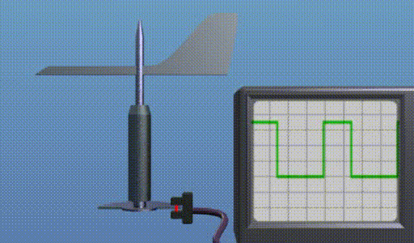

Wind direction is detected using a wind vane. There are several types of wind vanes, depending on the measurement they provide and how they provide it. Some give an analog signal (usually a voltage between 0 and 10 V) that is proportional to the angle relative to a given reference. Others incorporate an angular encoder with a communication line through which they give the measurement of that angle directly in numerical form.
Other wind vanes have a simpler structure and provide a digital signal whose "duty cycle" corresponds to the "orientation error" between a reference, given by its fixed base, and the wind vane itself. The following video shows how it works.

The moving part ends in an incomplete disc, with a solid angle of less than 180 degrees. Let's say (180 -5) degrees. This disc interrupts or allows the light emitted by the LED of a device consisting of an LED and a photodetector to pass through. The output of this photodetector is shown on the oscilloscope in the previous figure.
The signal generated by the wind vane is a digital signal that measures the disorientation of the nacelle, i.e., the difference between the orientation of the nacelle and the direction of the wind. It is an oscillating signal whose "duty cycle" is the measure of this difference in angles. The "duty cycle" of a periodic signal is the ratio between the time the signal is in the "On" state and the period of that signal.
The wind vane is a device that behaves like a pendulum excited by the wind instead of by gravity. As can be seen in the video above, the photoelectric detector receives a signal when the path of its light is not obstructed by the semicircle associated with the wind vane, which depends on the point of oscillation of the vane and its relative position with respect to its base, which is fixed to the gondola. The following graph shows four situations that illustrate these concepts.

The opaque semicircle of the wind vane is represented by the pink semicircle. The circular sector indicates the oscillation zone of the moving part of the wind vane. In the first case (on the left), the position of the light source on the wind vane is never obstructed: therefore, the output of the wind vane sensor is always excited (black line). In the second case, the oscillation of the wind vane means that during a small part of the oscillation the light from the wind vane does not reach the sensor, and we have an output signal that is excited most of the time. In the third case, the sensor only receives light during a small part of the oscillation cycle. In the fourth case, the sensor does not receive light at any point during the oscillation.
The "disorientation" of the Gondola with respect to the wind is given by the difference between the average angle at which the wind vane oscillates, which is that of the wind, and the direction of the Gondola (the horizontal line in the figure).
As can be seen when the wind vane signal is always On or Off, the disorientation is greater than the angle of oscillation of the wind vane (i.e., it is large). When this signal oscillates between On and Off, its "duty cycle" allows the disorientation to be measured accurately. When the duty cycle is 50%, the difference is 0º.
Measuring disorientation using a device requires a circuit that statistically processes these three situations (always On, always Off, and oscillating) and, in the case of oscillation, measures its duty cycle.